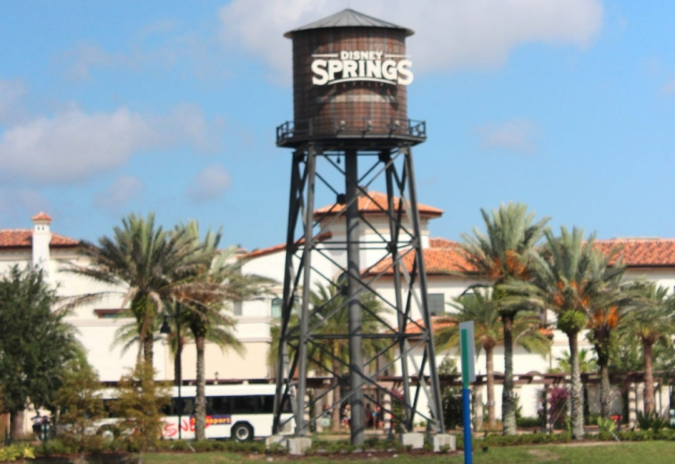
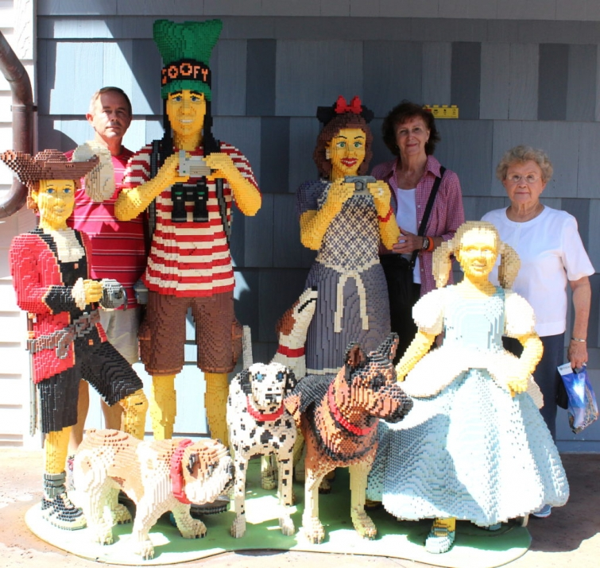
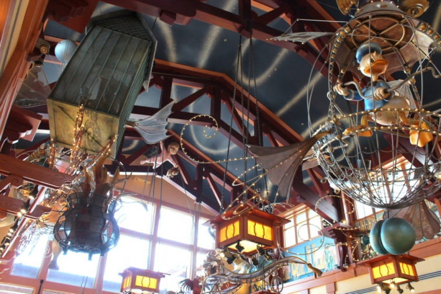

.png)
.PNG)
.PNG)
.PNG)
.PNG)
.PNG)
.JPG)
.JPG)
.PNG)
.PNG)


Would you like a break from all the political news for a few minutes? Then just follow along here for one final post on our latest Disney trip. 🙂
We ended our Orlando vacation with a visit to Disney Springs, the newly revamped area formerly known as Downtown Disney. They have an interesting display made entirely from Legos near the Lego store. (It is perfect for a group photo!)

And they also have an amazing World of Disney store (12 rooms of it – the largest in the world!) where you can find any and everything Disney related that you could ever want. I always love their ceiling displays. So creative!
There are a number of other Disney stores at Disney Springs along with Anthropologie, a Coca Cola store, Johnston & Murphy, Kate Spade, Lacoste, Lilly Pulitzer, Origins, Sephora, Sperry, Sugarboo, Tommy Bahama, Vera Bradley, and many many more. They have definitely improved the shopping experience for the area! In addition to all the retail shops, there are also a number of good restaurants. In fact, there are soooo many good ones, we had a difficult time choosing. D-Luxe Burger was one I had on my list.

The building was cute, and I have heard from our daughter that the burgers are fantastic.
The buildings are supposed to be reminiscent of old Florida waterfront homes. (The atmosphere is as important as the food in a restaurant, right? 🙂 )
And here is a peak at a portion of their menu:
Another choice we had for dining in Disney Springs was a really interesting looking waterfront restaurant called The Boathouse…complete with a collection of restored Amphicars. You can actually purchase tickets for a 20 minute ride/tour in them. This looked to be a very fun place to dine! Check out their extensive menu here.
But we did not choose The Boathouse or D-Luxe Burgers for our lunch that day. Instead, we made reservations for that meal at Chef Art Smith’s Homecoming Florida Kitchen.
I had read review after review of what a wonderful place it was and could not pass up the opportunity.
I loved the vintage look exterior set beside the flowing “Disney springs.” It too was designed in old Florida vernacular style with its wooden exterior siding and metal roof.
And the interior did not disappoint either. 🙂
Originally from Jasper, Florida, Chef Art Smith was a celebrity chef on Top Chef Masters and Oprah’s personal chef for 10 years. This restaurant, Homecoming, is his way of getting back to his roots. He was also a cast member at Disney World (like our daughter!) so the name Homecoming actually has a double meaning for him here. The building does indeed have a casual, relaxed feel of coming home.
They serve farm-to-table food with a big emphasis on Florida grown produce. The mural on the wall below shows an agricultural scene painted by a local artist, and the shades around the light fixtures are made from re-purposed potato sacks.
Even the bathroom doors give a nod to his Southern roots! 🙂
The tables were an interesting take on cypress wood, I believe, and I loved the grain-sack look of the custom chair upholstery.
Our table was next to one of the many large windows in Homecoming, and this was our waterfront view. 🙂
There is also a bar and a beautiful porch there. Our daughter had dined at the restaurant a week or two before we went. She said, “Mom, you are going to love the porch chairs. They are a kind of a green wicker and metal combination.” I could not picture that at all, but sure enough, when I saw those chairs in person, I did love them! 🙂
Now to the food! So many good choices we had a hard time deciding what to get!
Both my mother and my mother-in-law ordered salads.
This was the Reunion Salad.
Both salads were delicious with outstanding salad dressings.
My husband had the Shrimp and Grits and said they were the best he has had in a very long time.
(And he has had a lot of them!)
And big-eater-girl here just had to try out the Fabulous Fried Chicken.
(Seriously, it’s his signature dish. I couldn’t just miss out on that opportunity, right?? 🙂 )
Yummmmy! Perfect fried chicken. It is supposed to come with their hot sauce on it, but I was not sure I would like it so I had them leave it off. Boy was I wrong! There was a bottle of the hot sauce on the table, and it was fantastic!! (And I don’t normally douse my food in hot sauces.) The biscuits and the greens were also very good. So if you go, order this meal. You won’t be sorry. 🙂
And then they brought the dessert menu…
I had gone to the restroom and passed by the kitchen on my way back to the table. So I knew those desserts looked irresistible!
We shared Auntie’s Chocolate Cake
(with ice cream, of course)….and Art Smith’s famous Hummingbird Cake.
Delicious!
(especially that cream cheese icing.)
Would you like the recipe?
We finished are desserts, and then it was time to head back home. It was a short, but good trip. When we return to Disney World again, I want more time to shop in Disney Springs, and even though there are other restaurants there, I plan to eat at Homecoming again. It was that good. 🙂
Thank you so much for following along with our little trip. Coming up next will be all the Thanksgiving decorating from around here and….a giveaway for you! I hope you will be back for that.
Until next time…


.PNG)
Love this post! The car boat ride looks really fun 🙂
Another great read! The food at the restaurant looks sooo good. I would love to make the Hummingbird Cake. Thanks, Kelly.
I really need to get back down to Disney. They were starting the renovation the last time I was there. I love the style. It reminds me of my rural Florida Grandmother and Granddaddy’s home area.
What a nice way to end your visit! I have not been to Disney Springs since it changed names. But looks like I should! The food looked wonderful and I think I will try to make the Humming Bird cake– always wanted to but haven’t. Guess we only have a couple weeks to get ready for Thanksgiving!! Wondering who will be coming to your house or if you go to your mom’s? Hope some of your kids make it home!! But know with work schedules that can be difficult with young adults. Hope you share the menu you and yours enjoy. Hope the weather gets cooler as we go ” Over the River and Through the Woods!” 🦃🇺🇸🍂🍁My favorite holiday!!
Hi Kelly, Just a note to say how lovely your mom & mother-in-law are! Thank you for sharing your fun travels with us. Take care. Julia
Can’t wait to check out Disney Springs! Thank you
That Fried Chicken looked mouth-watering good! I have always loved Art Smith, he seems so friendly and genuine. His Hummingbird Cake is the first I’ve seen without Coconut, which I don’t like. I pinned it, and will wait until Spring to try it. Right now I’m trying to use up some of the 8 cans of Pumpkin my hubs bought last year! Yes, I’ve moved it twice now. :-/ Haven’t really decided what to do with it, maybe it will go to a food pantry soon, because other than pie, no one in my family likes other things with Pumpkin. I need to stop letting him shop! At least I got the supply down from 12 to 8!
Disney Springs is now on my Go-To list. Thanks so much for sharing your time there.
Kelly,
Wow, what upscale shops at Disney Springs. The restaurant selection sounds extensive and your experience at “Homecoming” sounds delicious.
I’m amazed you can stay thin with the yummy desserts you’re able to sample. I couldn’t say no to either one of the cakes—I’d probably want the whole piece! 🙂
xo,
Karen
Kelly, it sounds like you had a great time at Disney Springs. I can’t wait to try it myself!! I’m trying out holiday recipes, and the hummingbird cake sounds delicious. Thanks for all the good ideas
Kelly,
What a divine trip! Thanks for taking us along with your sweet pictures. I love “e-traveling” with you. The foods and sights look so fun. I can’t wait to see your Thanksgiving decorations! Take care!
Dawn